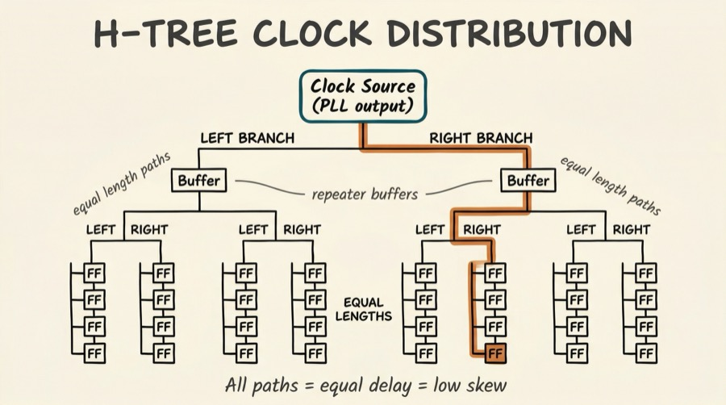
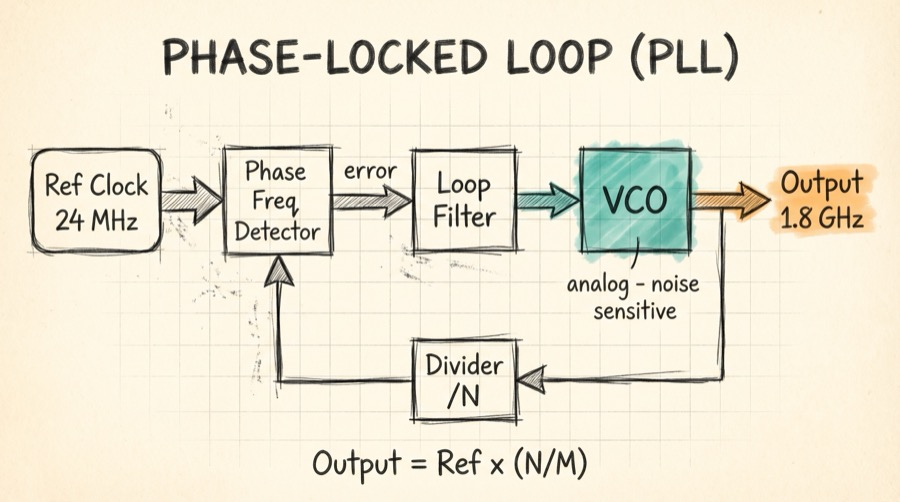
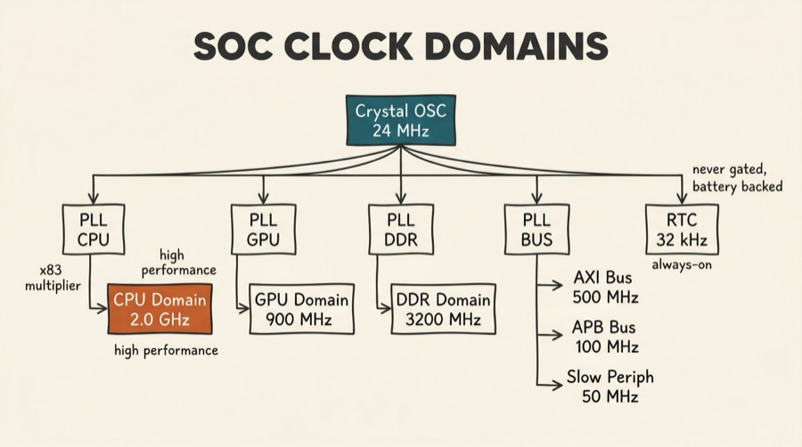
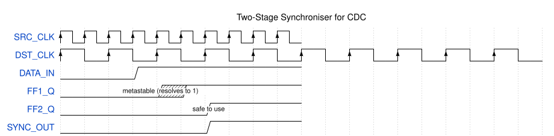
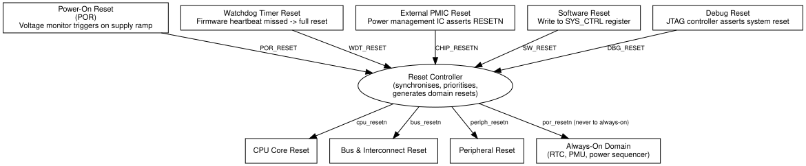
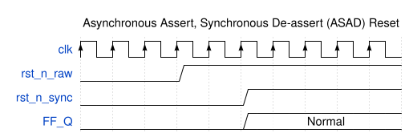
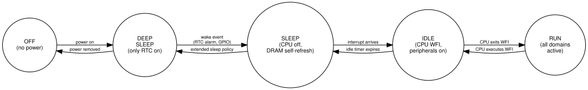
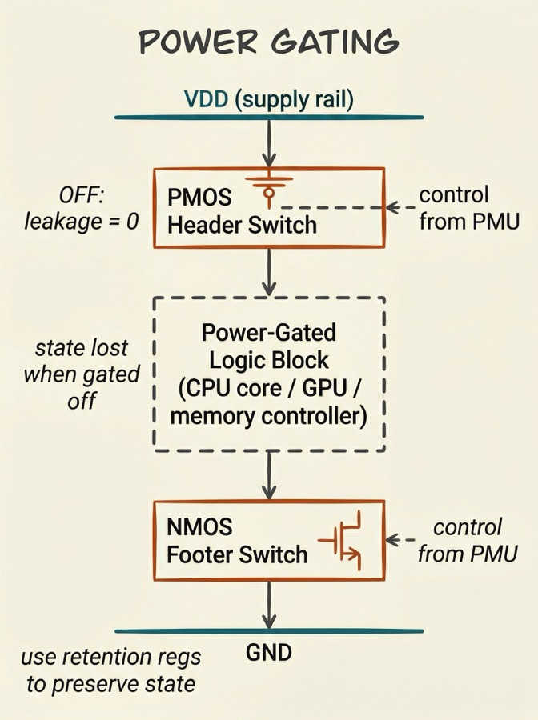
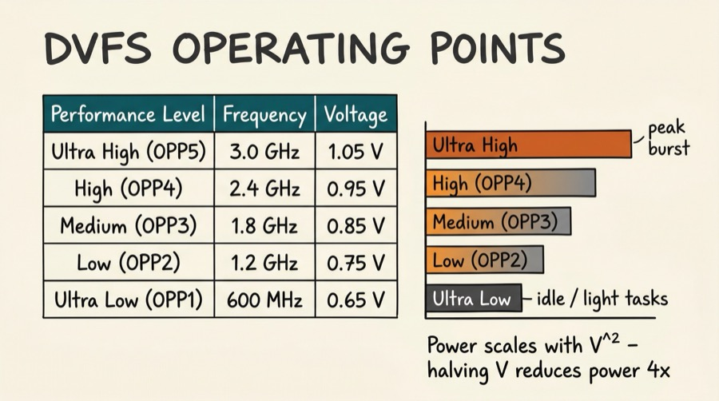
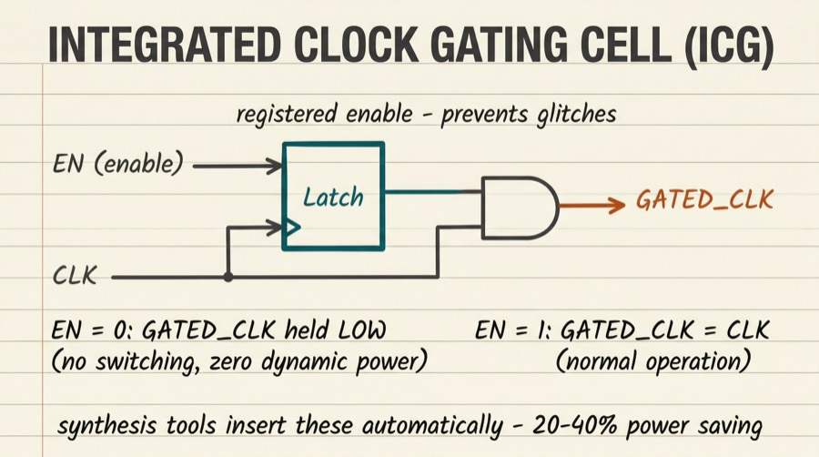

Series: Introduction to SoC Design | Article 7 of 11
Introduction
Every digital circuit needs a clock -- a periodic signal that synchronises all the flip-flops in the design, causing them to sample their inputs and update their outputs in a coordinated fashion. The clock is so fundamental that designing, distributing, and managing it is an entire sub-discipline of SoC engineering.
Alongside the clock, reset -- the mechanism that places a chip in a known initial state -- and power management -- dynamically controlling which blocks are active and at what voltage -- are critical infrastructure topics that every SoC designer must understand.
Why Clocking is Hard
Generating a clock signal that oscillates at a precise frequency seems straightforward. The real challenge is delivering that signal to millions of flip-flops distributed across a die that may be 100 mm² or larger, all arriving at exactly the same time (to within picoseconds), despite:
- Wire resistance and capacitance -- which delay signals differently depending on path length
- Process variation -- transistors at different corners of the die behave slightly differently
- Temperature gradients -- hot areas near power-hungry cores have slower transistors
- Voltage droop -- areas with high switching activity momentarily drop in supply voltage
This collection of problems is called clock skew (spatial variation) and clock jitter (temporal variation). Both reduce the timing margin available for logic between flip-flops.
The Clock Distribution Tree
The solution is a carefully engineered clock tree: a hierarchical network of buffers that distributes the clock signal from a single source to all destinations, with each branch sized so that all paths have approximately equal delay.

All paths from source to leaf flip-flops are equal length, giving equal delay and low skew.
Clock tree synthesis (CTS) is an automated step in the physical design flow that constructs this tree. It is one of the most critical steps in achieving timing closure.
Phase-Locked Loops (PLLs)
SoCs do not use their raw crystal oscillator frequency (typically 24--100 MHz from an external crystal) directly. Instead, a Phase-Locked Loop (PLL) multiplies and divides this reference to generate the precise frequencies needed by each subsystem.

Output frequency = Ref × (N/M) where N and M are programmable dividers.
A PLL is an analog circuit embedded in the otherwise digital SoC. Its output frequency is controlled by a digital divider, but the loop filter and VCO (Voltage-Controlled Oscillator) are analog. This makes PLLs sensitive to supply noise -- which is why they have their own isolated power supply on-chip.
A typical large SoC has 4--12 PLLs:
- CPU PLL (0.8--3.5 GHz)
- GPU PLL
- DDR PLL (matched to DRAM frequency)
- Peripheral PLL (100--400 MHz for buses)
- USB/PCIe PLLs (specific protocol reference frequencies)
Multiple Clock Domains
Different parts of a SoC operate at different frequencies, and often from different clocks. A clock domain is a group of flip-flops all clocked by the same source.

When data must cross from one clock domain to another -- for example, from the CPU domain to the peripheral APB domain -- a Clock Domain Crossing (CDC) circuit is required. Failure to handle CDCs correctly is one of the most common sources of functional bugs in SoC designs.
The Metastability Problem
When a flip-flop's input changes near its sampling edge, the flip-flop may enter a metastable state -- neither a clean 0 nor a clean 1. If the metastable state propagates, it can corrupt data or cause unexpected behaviour.
The probability of metastability resolving correctly increases with time. A two-stage synchroniser provides enough time for resolution before the signal is used:

The two-stage synchroniser adds two destination-clock cycles of latency but reduces the probability of a metastability-induced failure to negligible levels. More complex CDCs (for multi-bit signals or FIFOs) use more sophisticated structures.
Reset: Getting to a Known State
Reset is the mechanism that places all flip-flops in their initial, known state. Without reset, the behaviour of a digital circuit after power-up is undefined -- flip-flops can power up in either state.
Reset Sources
A SoC typically has several reset sources:

Synchronous vs Asynchronous Reset
RTL designers must choose between two reset styles:
Asynchronous reset -- the flip-flop resets immediately when RST is asserted, regardless of the clock. Fast response, but the reset de-assertion must be synchronised to avoid metastability.
Synchronous reset -- the flip-flop only resets on the next rising clock edge after RST is asserted. Requires a clean clock, but avoids de-assertion timing issues.
In practice, most SoC designs use asynchronous assert, synchronous de-assert (ASAD) -- the reset asserts immediately for reliability, and de-asserts through a synchroniser to prevent metastability.

Power Domains and Power Management
A modern SoC is not a single block of silicon that is either fully on or fully off. It is divided into power domains -- regions that can be independently powered up or down. This enables enormous power savings by only energising the blocks that are currently needed.
Power States
A typical SoC power state machine:

Power Gating
Power gating uses header or footer switches (large PMOS or NMOS transistors) to physically disconnect a domain from its supply rail, reducing leakage current to near zero:

When the block is gated off, its internal state is lost. If the state must be preserved (e.g., cache contents, CPU registers), retention registers -- special flip-flops with a separate, always-powered supply -- save critical state before power-down.
DVFS -- Dynamic Voltage and Frequency Scaling
DVFS reduces power consumption by lowering both the supply voltage and clock frequency when full performance is not needed. Power consumption of CMOS logic scales approximately as:
P_dynamic ≈ α × C × V² × f
Where:
α = activity factor (fraction of gates switching per cycle)
C = total capacitance
V = supply voltage
f = clock frequency
Since power scales with V², halving the voltage reduces dynamic power by 4×. Modern SoC CPUs support many operating points, and the OS uses a DVFS governor to select the appropriate operating point based on workload.

Clock Gating
A lighter-weight alternative to power gating is clock gating: stopping the clock to a region of logic. With the clock stopped, flip-flops no longer switch, and dynamic power drops to near zero (though leakage continues). Clock gating is implemented with an integrated clock gating cell (ICG):

When EN = 0, GATED_CLK is held low (no switching). When EN = 1, GATED_CLK follows CLK normally.
Modern synthesis tools automatically insert clock gating cells throughout the design, reducing dynamic power by 20--40% with no architect effort.
The Always-On Domain
Even in the deepest sleep state, some logic must remain powered: the real-time clock (to wake the system at a scheduled time), the power management unit itself (to manage power-up sequencing), and retention registers holding critical context. This collection of always-powered logic is the Always-On (AO) domain -- it draws power from a supply that is never switched off as long as the battery is present.
Summary
Clocking, reset, and power management are the infrastructure that makes a SoC run correctly and efficiently. PLLs generate the precise, stable frequencies required by each subsystem. The clock tree distributes the clock signal with minimal skew. Clock domain crossings require careful synchronisation to prevent metastability. Reset places all logic in a known initial state, with the source and polarity carefully considered. Power domains, gating, and DVFS together reduce energy consumption dramatically -- enabling always-on devices to run for days or years on a small battery.
Intermediate Articles This Topic Connects To
- Clock Domain Crossing Techniques -- Metastability in depth, multi-bit CDC, async FIFOs
- Power Management Techniques -- DVFS, retention, power sequencing, PMU firmware
- Physical Design: Floorplanning and Place-and-Route (Advanced) -- CTS, IR drop analysis
Previous: Article 06 -- Interconnects and Bus Protocols
Next: Article 08 -- Peripherals and I/O: Connecting the SoC to the World